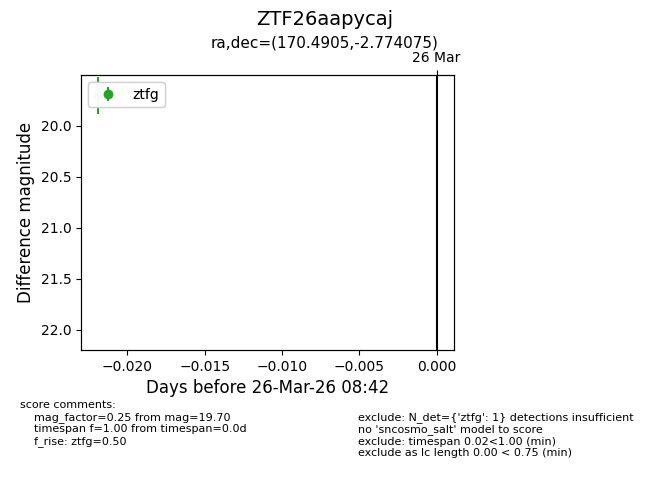
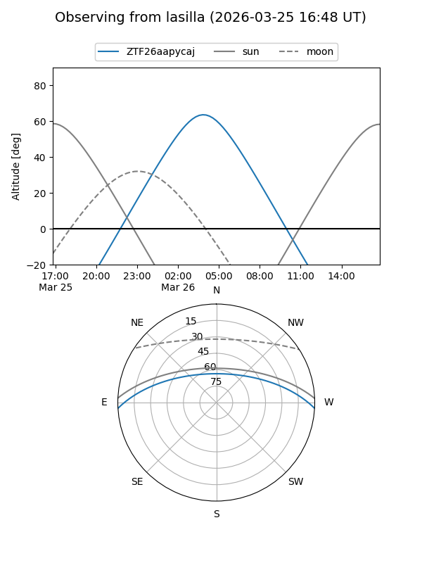
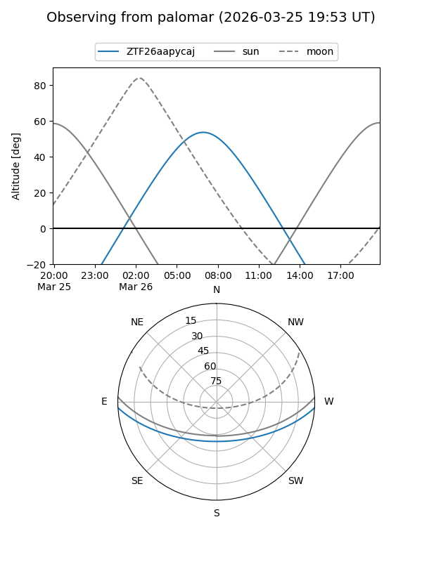

ZTF26aapycaj
Target ZTF26aapycaj at 2026-03-26 08:44
Aliases and brokers:
FINK: link
Lasair: link
ALeRCE: link
alt names
ZTF26aapycaj (ztf,fink_ztf)
Coordinates:
equatorial (ra, dec) = 170.4905,-2.77407
equatorial (HMS+DMS) = 11:21:57.72,-02:46:26.67
galactic (l, b) = (263.6217,+53.12871)
Flags:
Photometry:
last ztfg=19.70
1 ztfg detections
Lightcurve

Visibility


Additional plots